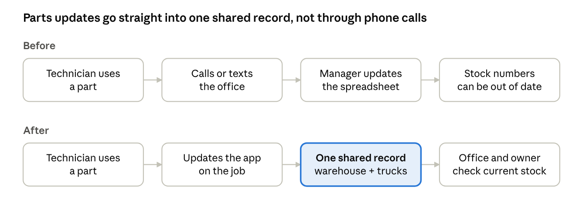
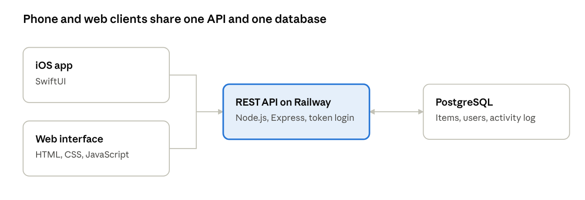

Replacing Spreadsheets with a Custom Inventory App for a Louisiana HVAC Company
Deltara Tech replaced spreadsheets, handwritten notes and phone calls with one custom inventory app that tracks every part across the warehouse and each service truck. The company now knows what it has, where it is and who used it, and one of the owners estimates the app saves 4 to 5 hours of administrative work a week.
| Client | A Louisiana HVAC company with 100+ field technicians |
|---|---|
| Users | Field technicians, office managers and owners |
| Challenge | No reliable view of what parts the company had, where they were or where they went |
| Solution | A custom inventory app tracking stock by location and by person, with low-stock alerts and a full activity history |
| Result | An estimated 4 to 5 hours a week saved, fewer unnecessary purchases and faster tracing of shortages |
| Status | In daily use |
The challenge
The company's inventory numbers were only as good as the last manual update, and those updates didn't always happen. Technicians called or texted when they used parts from their trucks, and office staff entered the changes into spreadsheets and handwritten notes.
That created three problems:
- Staff time: updating spreadsheets, checking stock, calling technicians and working out what to order took an estimated 5 to 7 hours a week.
- Wasted purchases and trips: the company sometimes bought parts it already had, or sent technicians to jobs expecting a part that wasn't in stock.
- Unexplained shortages: when parts such as capacitors or contactors came up short, there was no reliable way to tell whether they had been used on a job or gone missing.
What the business needed
The owner summed up the goal in one sentence:
“We wanted to know what inventory we had, where it was located, and who was responsible for it.”
Off-the-shelf inventory software was either too expensive or didn't fit how the company worked, and the owners didn't want to pay a monthly subscription for features nobody would use. Deltara Tech scoped a focused custom build around the team's actual workflow:
| What the business needed | What the app does |
|---|---|
| See stock in the warehouse and on each truck | Tracks inventory by location |
| Know where parts went | Records who used or moved each part |
| Stop relying on calls and texts | Lets technicians update items as they use them |
| Order before running out | Flags items that are running low |
| Trace a shortage | Keeps a history of every inventory change |
| Avoid long training | Includes only the features the team uses |
Before and after
The app removes the phone call and the manual re-entry from every parts update, so the office no longer depends on someone remembering to report it.

How it is built
The architecture is deliberately simple: the phone app and the web interface share one API and one database, and an activity log records every change.

Results
The team now works from one shared system, with less administrative work and a clear record of where every part is. Office managers review inventory daily without asking each technician what's on their truck, technicians update the app throughout the workday, and the owners check it each week.
| Measure | Before | After |
|---|---|---|
| Inventory administration | An estimated 5 to 7 hours a week | An estimated 4 to 5 hours a week saved |
| Where stock information lives | Spreadsheets, notes, calls and texts | One app the whole team uses |
| Finding a part on a truck | Call the technician | Check the app |
| Tracing a shortage | Often impossible | Each part's history shows who used or moved it |
| Ordering | Duplicate orders and empty-truck surprises | Low-stock alerts and a shared count |
At the owner's estimate, the time saved comes to about 208 to 260 hours a year. The owner also reports fewer unnecessary purchases and less missing inventory, but has no exact dollar figure, so this case study doesn't claim one.
“The biggest change is that we're not constantly calling each other to figure out where parts are.”
“Now we have one system everybody can reference. Going back to spreadsheets and text messages would be frustrating.”
— Owner, Louisiana HVAC company
What's next
The owner has asked about using AI to help the office organize incoming service requests, starting small and keeping a person in charge of every decision. Deltara Tech is building that as a separate proof of concept: the AI Service Operations Assistant.
The client's name is withheld at their request. Time figures are the owner's estimates, not measurements.
Get in touch